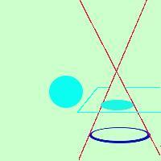

Circonferenza

E' l'intersezione fra un cono matematico ed un piano parallelo alla circonferenza di base e non passante per il vertice
Naturalmente per la figura intendiamo solo il bordo (e' una curva, non un'area)